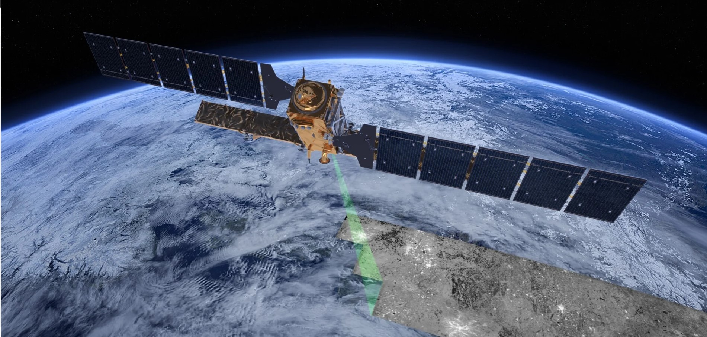
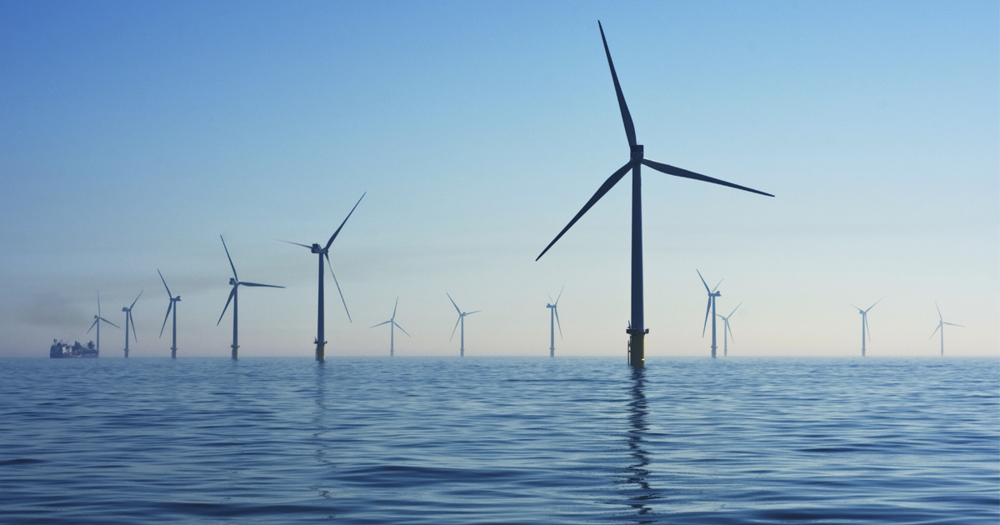
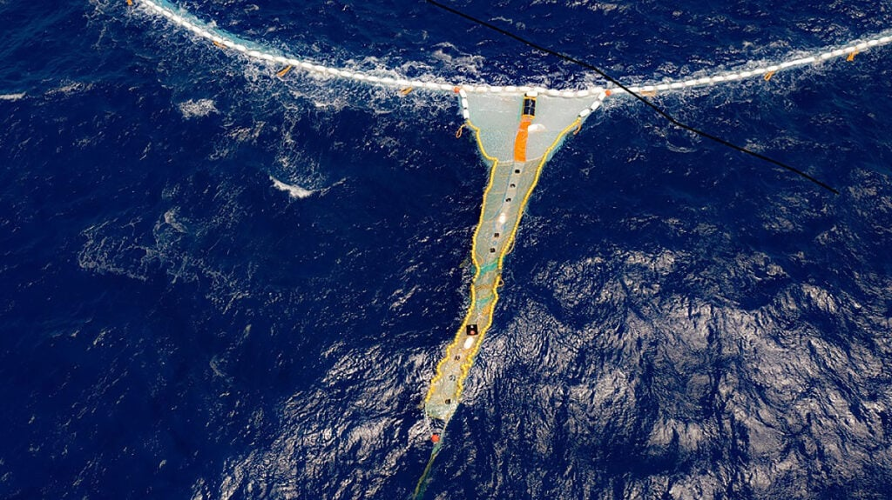

Monitoramento por Satélite e Sensoriamento Remoto
Esta tecnologia oferece uma visão sinóptica e contínua da vasta superfície oceânica, algo impossível
de alcançar apenas com navios. Satélites equipados com radiômetros medem a temperatura da superfície
do mar (TSM) com precisão, sendo essenciais para prever eventos de branqueamento de corais e a
intensificação de furacões. Além disso, sensores de "cor do oceano" detectam a clorofila-a,
permitindo o monitoramento de blooms de fitoplâncton (a base da cadeia alimentar marinha) e a
identificação de proliferações de algas nocivas. Altímetros de radar mapeiam a topografia da
superfície do oceano, revelando padrões de correntes globais, redemoinhos e a elevação do nível do
mar, dados cruciais para a modelagem climática.

Energias Renováveis Offshore (Eólica e Marés)
A principal contribuição dessa tecnologia é o combate direto às duas maiores ameaças climáticas aos
oceanos: aquecimento e acidificação. Ao gerar eletricidade em larga escala sem a emissão de gases de
efeito estufa, as turbinas eólicas offshore e os sistemas de energia das marés reduzem nossa
dependência de combustíveis fósseis. Isso é vital porque o oceano absorve cerca de 25-30% do CO2 que
emitimos; esse CO2 dissolvido forma ácido carbônico, causando a acidificação oceânica que corrói
conchas e esqueletos de corais e plâncton. Portanto, ao diminuir as emissões de CO2 na fonte, essas
tecnologias ajudam a desacelerar tanto o aumento da temperatura da água (que causa o branqueamento
de corais) quanto a perigosa alteração química do pH marinho.

Tecnologias de Remoção de Plástico
Essas inovações abordam a poluição plástica existente em duas frentes principais. A primeira, e mais
crítica, é a interceptação fluvial, que usa barreiras flutuantes automatizadas e sistemas de coleta
(como o "Mr. Trash Wheel" ou "Interceptor") para capturar o lixo plástico nos rios antes que ele
possa chegar ao oceano, fechando a torneira da poluição. A segunda frente foca na limpeza dos giros
oceânicos, onde o plástico se acumula; exemplos incluem sistemas de barreiras passivas em grande
escala que flutuam com as correntes para concentrar o plástico flutuante (macroplástico) para
extração por embarcações. Embora ainda estejam em fase de aprimoramento e enfrentem desafios
logísticos e de escala, representam uma mudança vital de uma abordagem puramente passiva para uma
ação corretiva direta no combate a esse poluente visível.

Veículos Autônomos Subaquáticos (AUVs e ROVs)
Essas ferramentas são nossos "olhos" nas profundezas escuras e de alta pressão. Os ROVs (Veículos
Operados Remotamente) são conectados por cabos a um navio-mãe, permitindo que os pilotos os manobrem
em tempo real e usem braços robóticos para coletar amostras geológicas ou biológicas com precisão
cirúrgica. Já os AUVs (Veículos Autônomos Subaquáticos) são pré-programados para missões de
mapeamento, deslizando silenciosamente (como os "gliders") por longos períodos ou usando sonares de
alta frequência para criar mapas 3D do leito marinho (batimetria). Eles exploram locais inacessíveis
e perigosos, como fontes hidrotermais, cânions submarinos ou a parte inferior das plataformas de
gelo, fornecendo dados essenciais sobre biodiversidade e geologia com impacto físico mínimo.